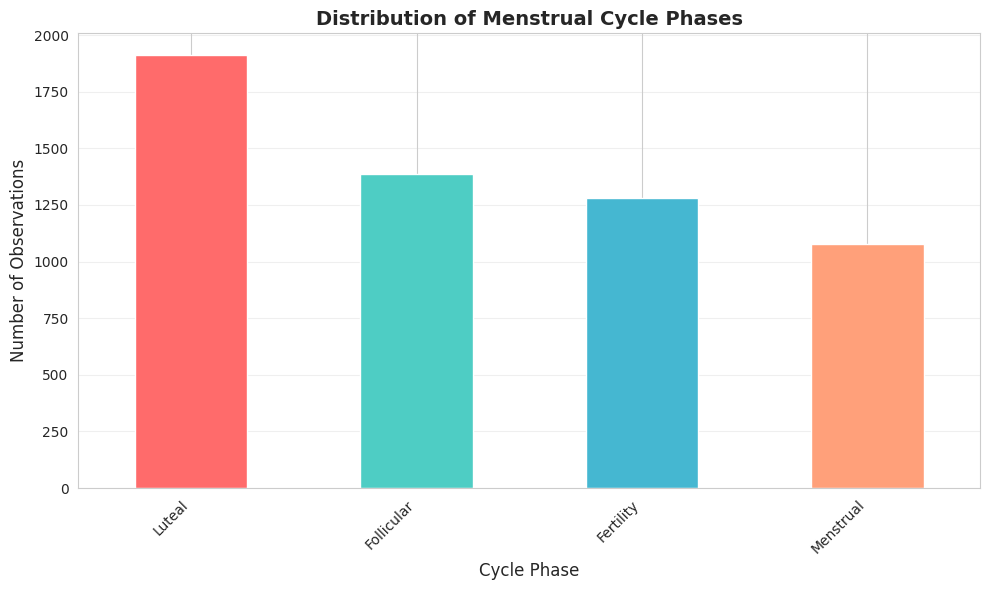
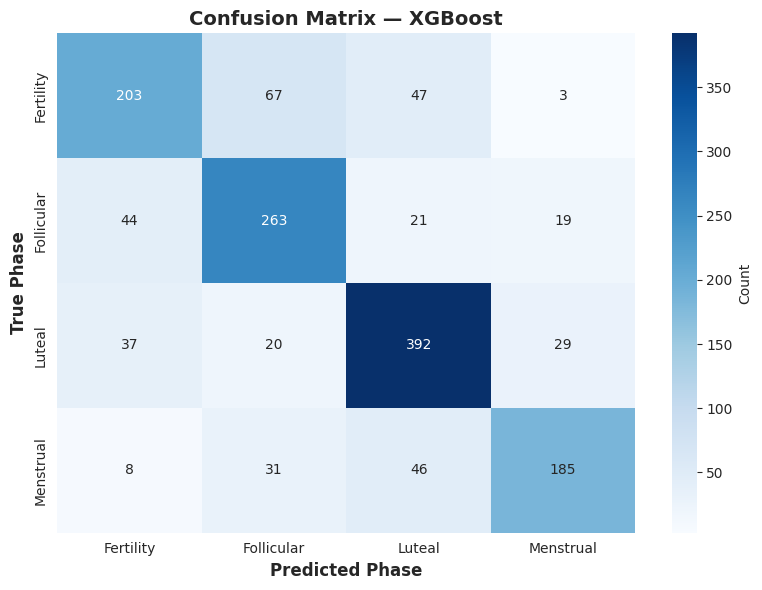
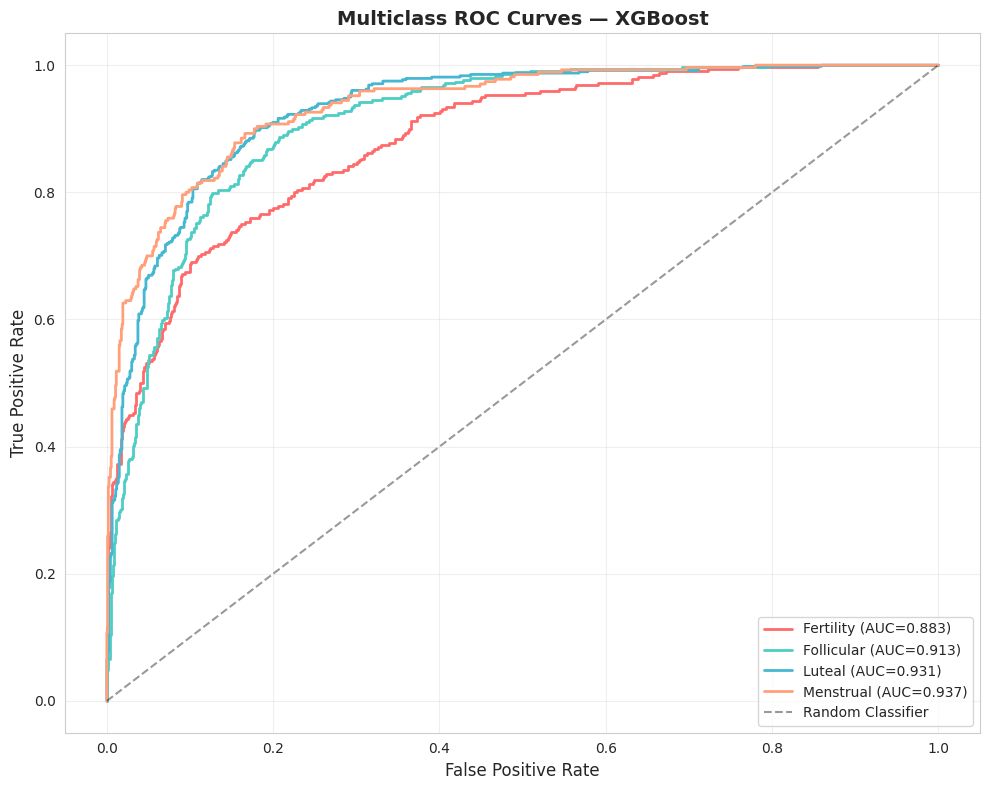
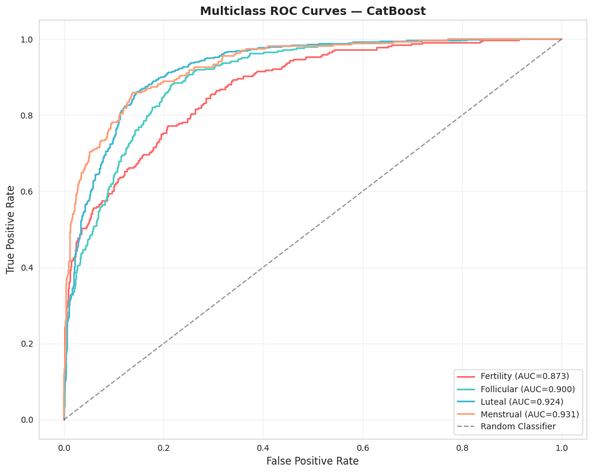
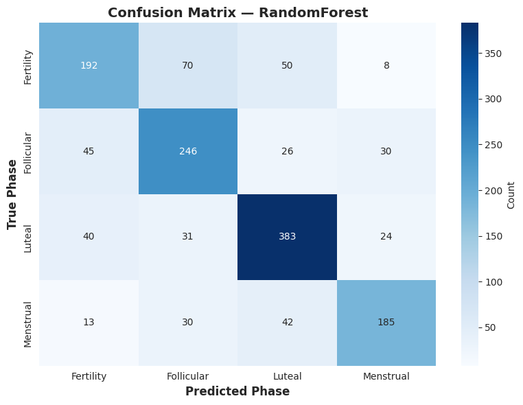

Menstrual Cycle Phase Prediction

Executive Summary
End-to-end machine learning pipeline to predict menstrual cycle phases (Menstrual, Follicular, Fertility, Luteal) using multimodal data from the mcPHASES dataset (PhysioNet). The pipeline integrates physiological sensors, hormone measures, and self-reported symptoms with feature engineering and multiple ML models.
Dataset
Data from mcPHASES (PhysioNet) covering ~42 consented subjects and ~90 days per subject. The processed dataset merges 10 CSV sources (HRV, hormones, glucose, sleep, stress, activity, etc.) into daily aggregates.
Methods
- Feature engineering: hormonal ratios, lags, rolling windows, interaction features.
- Handling imbalance: SMOTE and class weights; stratified train-test splits.
- Modeling: XGBoost, CatBoost, Random Forest, DNNs (PyTorch/Keras), attention/tabular models.
- Evaluation: Stratified k-fold CV, confusion matrices, ROC, AUC, F1, and feature importance analyses.
Results
Ensemble tree models (XGBoost/CatBoost) achieved the strongest performance; feature engineering and hormonal ratios were highly informative. Limitations include dataset size and missing data.
Figures




Conclusion & Future Work
Results are promising; next steps include larger cohorts, personalized models, and richer temporal modeling for sub-daily signals.